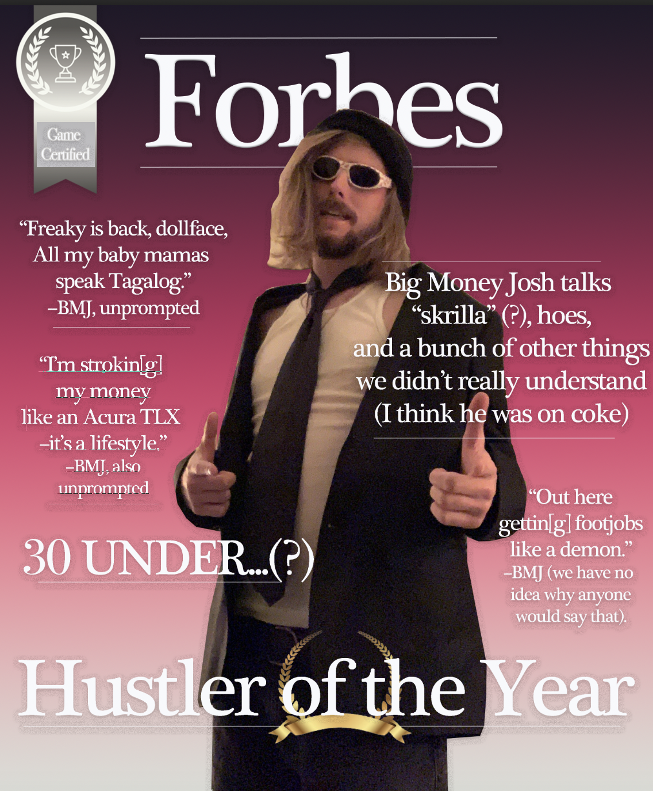

Digital Intervention--"Music Hustler Tips"
"Hey hey hey! It's Big Money Josh. I was involved in the creation of--not 32, not 34--but 33 different Grammy award-winning albums. I'm on 7 different FBI watchlists and I was cannonized by the Catholic Church in a former life as the Patron Saint of amphetimines and trickle-down economics. Most importantly, I know how to get your song plays on Spotify...""
The original purpose of the @music.hustler.tips Instagram page was to highlight the phenomenon of internet scammers preying on young musicians, offering them useless tips and services in exchange for their money and integrity. As many of these accounts call Instagram their home, I figured it would be the perfect avenue for my intervention. Many of these pages cultivate a persona–financial gurus with “insider industry knowledge” and problematic political ideas embedded within their philosophies. My goal was to parody this archetype with a hyperbolic flare. Everything about Big Money Josh is exaggerated–from the (poorly done) NY Italian accent to the awkward swagger. His advice is useless and (in some cases) downright illegal. He has no social awareness or respect for oppressed communities (unless it benefits him). In some videos, I wanted to comment on the meta issue of internet scamming, in others, “rainbow capitalism”. I began this page over a year ago and decided it would be perfect for this intervention project. The vision remains uncompromised from its conception. All videos were written, filmed, edited, and scored by me. I appear to have gained a small cult following on Instagram. As I looked at the pages that follow the account and frequently comment, many are young musicians in bands around the NY/Philly area. I have certainly reached my target demographic. I hope to help discourage them from following the advice of these internet scammers. Had I had more time, I would have promoted it further, thinking of more creative ways to highlight the absurdity of the Instagram music hustler community.
